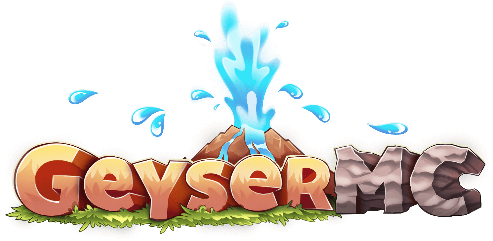

Welcome to the offical Minecity website!
Don't play minecity quite yet? Consider playing because we got the fun!!!
What do we really have? We have...
...Interesting buildings
...Life roleplay
...and more!!!
Not satisfied yet? We have cross platfrom* on our server! This means that bedrock and java edition players can play together seamlessly**.
*There are some requirements for bedrock players. Click here for the requirements.
**Bedrock players will appear as Steve or Alex to java edition players. This is due to the fact that Java edition handles skins differently.
But if you are a technology expert, you might be wondering "How is this possible?
This is possible thanks to

GeyserMC is a proxy closes the space between bedrock and java edition. Click the picture above to check them out!!!
Now are you convinced? You probably are!!! Anyway, make sure to check the docs as it can help you with the game!!!